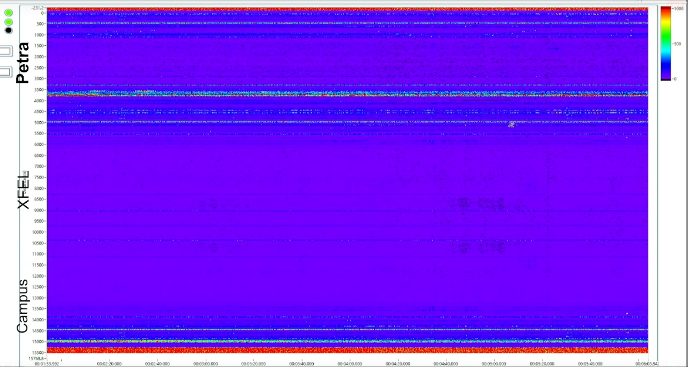

WAVE
The Seismic Network
The WAVE initiative investigates and designs a seismic and geo-acoustic measurement network in and around and around the Science City Hamburg Bahrenfeld. WAVE is a unique and innovative infrastructure for geophysics, physics and especially for large-scale research facilities.
A key element of WAVE is the widespread use of modern seismic sensors, in particular distributed acoustic sensing (DAS). This technology uses fiber optic cables as sensitive seismic sensors. It enables ground motion data to be recorded at an unprecedented spatial density over long distances, revolutionizing geophysics.
The WAVE concept has been tested under realistic conditions to demonstrate the feasibility and possibilities of such a network on site. To this end, the initiative carried out a proof-of-concept experiment on the DESY/UHH campus in Bahrenfeld in May 2021, using, among other things, a 12.6 km long, existing and continuous strand of currently unused telecommunications fiber as a series of seismic sensors. The wave field was recorded at high resolution, with 1 m intervals along the entire length of the fiber.
Since then, we have expanded the network to currently 19 km of fiber, organized several Outreach events and Livestreams of the data, including during a Taylor Swift concert. We hold regular Workshops and other events, and of course we also use the data for a range of interdisciplinary Scientific analysis!
Map of the DAS-fiber test track, seismometers and geophones.
Zoom in for a map of the fiber track at the Bahrenfeld Campus and in the tunnel of EuXFEL (yellow). In the northeast, the fiber runs through the 'Max von Laue' experimental hall and briefly follows the circular path of PETRA there. Other sensors (seismometers and geophones) are also shown on the map as blue triangles. Zoom in for more detail.
News + Events.
Livestream of Taylor Swift making WAVEs
How does the city of Hamburg swing along to Taylor Swift?
With our WAVE glass fiber sensor network, we listen to vibrations underground with a thousand ears. On July 23rd and 24th 2024, Taylor Swift performed at the Volksparkstadion Hamburg, just 2 km from our experiment!
During the two concerts, we offered a livestream of our vibration measurements.
We broadcasted our measurements on the Livestream on 23th of July at 18:00 -- 23:00 CEST
and again on 24th of July at 18:00 -- 23:00 CEST.
Watch this space, we will update with more results over the next few days.
"Swiftquakes?!" Don't worry, these are not real earthquakes!
These are tiny vibrations! You would not feel them, our measurement device is really sensitive..You've probably felt the ground shaking a bit when a big truck passes nearby? It's the same effect, just caused by lots of happy people dancing.
We already knew that we should able to pick up vibrations of concerts happening in the Volksparkstadion, since we have already picked concerts e.g. by Metallica in the past. Lots and lots of fans jumping and dancing at the same time will cause the ground to "swing along" a bit.

What am I looking at?!
On the livestream, you see two visualisations:A ring of ‘rainbow blobs’ and a more classic ‘waterfall plot’.
The ‘rainbow blobs’ show the strength of the arriving signals along the fiber but filtered for different frequency bands. So the wider a specific colour band is, the stronger are the waves vibrating in that range. They also help understand from what direction the signal is coming and help us observe along what path the waves are travelling.
On the horizontal axis of the ‘waterfall plot’ you see the distance along the optical fibre, whereas the vertical axis represents the time. The colours then show how strongly the vibrations ‘wiggle’ fiber: yellow is stronger shaking, green is calm. So with the time passing, we can observe where along the fiber signals are arriving first and how they change as they travel.
Wait, you're measuring all this with glass fiber? How?
Glad you asked! It's using a measurement principle called "Distributed Acoustic Sensing", or DAS for short. One of our team members, Wanda Vossius, explains it here, on our instagram.
First results from the Taylor Swift concert!
Image credit goes to "the WAVE team", map credit to mapbox.com.
Spectrogram of the Taylor Swift concert, with some songs annotated. The brighter yellow colors indicate stronger vibrations. The 'ladder structures' shift up and down with the beats per second of the song -- this is probably a result of the fans jumping to the beat, and with that, they generate specific frequencies.

PETRA's heartbeat during the Taylor Swift concert in Hamburg
The ‘rainbow blobs’ show the strength of the arriving signals along the fiber but filtered for different frequency bands. So the wider a specific colour band is, the stronger are the waves vibrating in that range. They also help understand from what direction the signal is coming and help us observe along what path the waves are traveling.This is what we measured during the entire concert with a ring of optical fiber around the PETRA III accelerator ring of DESY, sped up 100x
Seismic waves in EuXFEL tunnel during Taylor Swift concert in Hamburg
Here, you see that the seismic waves from Love Story and Shake it Off reached all the way through the 3.4km long EuXFEL tunnel!
Animation of seismic waves from Taylor Swift concert, projected onto a map
Animation showing the waves that cross the campus at 8 pm. You can see how the waves even run through the entire tunnel of the European XFEL, that's 3.4 km of tunnel.
Animation of 1 minute seismic waves from Taylor Swift concert in a 'waterfall plot'
These are the same waves as we show on the map, above. Horizontal = distance along the fiber, time runs past vertically.
Waterfall plot of one minute of signal around the time the first support band starts.
You can clearly see how the overall amplitudes of the seismic signal become stronger (=more yellow) around 41 seconds.
And the animation of waves in the EuXFEL tunnel during "Shake it Off" on wednesday!
Same colorscale as above, you can see that the waves during Shake it Off were really strong!

Spectrogram of the first 3 hours of the concert.
Now time is on the horizontal axis, vertical is the different 'beats per second', or frequency. The first part is the support band, around 90 minutes Taylor Swift starts.
Different songs have different rhythms, you can see the different vertical 'ladder' structures. You can also see that the fans kept their energy to dance to Taylor!

Public viewing of Euro 2024 football-WAVEs
Can we hear the goals from the Euros below ground?
With our WAVE glass fiber, we listen to vibrations underground with a thousand ears. On the 5th of July 2024, when France and Portugal met at the Volksparkstadion Hamburg for the quarter finals, just 2 km from our experiment, we livestreamed our vibration measureements during the match. When goals are scored, the celebrations cause the kind of vibrations that we can measure! We tested how sensitive our setup is and whether we can see the vibrations within the fiber.

What am I looking at??
Along our 16 km of glass fiber, we measure how much it vibrates, or 'wiggles', about every 10 meters. Each horizontal line in the image shows you how much that particular section of glass fiber is wiggling. Red means that there are strong vibrations, blue shows the bits where it's quieter.Starting from the top, you see how much vibrations are currently felt in DESY's PETRA tunnel. Since that tunnel is a few meters underground, there are not a lot of vibrations from car traffic, wind and such. So it's pretty blue. The same is true for the vibrations in the XFEL tunnel - also pretty 'quiet', and blue.
Going further down in the image, we reach the part of the fiber that is near the surface, and roads, on the DESY/Bahrenfeld campus. The car traffic, trees swaying in the wind, and general urban activity all generate vibrations, so those sections of the glass fiber are wiggling more - and show up red!
The whole picture is moving towards the left: that's time passing by.
These are tiny vibrations! You would not feel them, our measurement device is really sensitive..
You've probably felt the ground vibrating when a big truck passes nearby? It's the same effect, just much weaker, and coming from lots of trucks and cars and swaying trees and other things happening at the surface at the same time.What happened when a goal was scored?
Before this football match, we already knew that we should able to pick up vibrations of concerts happening in the Volksparkstadion, since we have already picked up a concert by Metallica in the past. Lots and lots of fans jumping and dancing at the same time will cause the ground to vibrate a bit.We expected that the fans in the stadion will celebrate and jump around when a goal is scored. Indeed, we were able to pick up the football fans getting excited and jumping around during the penalty shooting. We will upload some images here soon!
WAVE at the Science City Day!

On Saturday, 1st June 2024 from 11:00 - 19:00, the WAVE team was be present at the Science City Day, to show you what the measurements with our fiber-optic seismic network look like. Can you find out where our fiber is buried? Can you generate seismic waves? What if you hop around on a bouncy castle?? Come try it out on the DESY campus! More information here: https://www.sciencecityday.de/programm/wave-field-huepfburg/
First WAVE workshop.
The first WAVE workshop took place as a hybrid event on Friday the 13th of May 2022, from 9:00 to 14:30.
In the workshop we have:
- Presented the results of the demonstration experiment/campaign
- Learned about the use of machine learning for the seismic network (Talk by Prof. Conny Hammer, UHH)
- Discussed the future steps in designing and realising the network
- Exchanged information about ongoing research and activities related to the seismic network
The workshop schedule is detailed here. If you would like to have a look at the workshop material, please contact us.
Second WAVE workshop.
WAVE day: on July 13, 2023 at DESY we had an in-person WAVE meeting, focused on presentations of recent results and discussions about research projects. The workshop schedule is detailed here.

Results and Analysis.
Impressions of the measurement campaign.


Signals along the DAS fiber.
![1. HF stations in EuXFEL are switched off for access. <br>
2. HF stations in the EuXFEL are switched on again after access.<br>
3. hammer blows against cable rack XTD9 for position determination<br>
4. hammer blows in XTD2 against cable rack<br>
5. hammer blows in XTL on concrete floor<br>
6. tunnel announcement 'interlock search'<br>
7. tunnel announcement 'accelerator is switched on'<br>
8. start of morning activity on campus<br>
9. load switching operations on the transformers of the power supply on the DESY campus](./Figures/summary_waterfall.png)
Overview of whole fiber track:
Waterfall diagram of the records of all DAS sensors along the 12.6 km long fiber. The maximum amplitude of the time series at 20 s intervals is color-coded across the spatially distributed sensors and the 16 hour recording period. The arrows mark events that are described in the listing (click for details), numbered accordingly.

Signals along EuXFEL tunnel:
Spectra of all DAS channels along the accelerator tunnel XTL, during accelerator operation of EuXFEL. Already at first glance, many elements that may cause disturbance or noise can be identified by their characteristic frequencies. Some prominent elements are marked for illustration.
Car signals.
![<b>Cars passing the DAS fiber:</b><br> Spatiotemporal DAS recording of passing cars is shown at the top. The fiber section between positions 10430 and 10800 is immediately adjacent to a road. A map of the road section is shown at the bottom left. At the bottom right is a recording of the passage of a single car, with horizontal lines framed in appropriate color corresponding to snapshots of the fiber excitation at the bottom center. <br>
Since the fiber passes the road twice in opposite directions, the waterfall diagram is mirrored about the horizontal at a distance of 10645m. The cars are clearly visible as diagonal stripes, and their slope gives immediate information about the speed of the cars (about 18 ± 5km/h). The first car appears at about second 60. Another car travels in the same direction starting at second 125. While the first car crosses a clearly slower road user traveling in the opposite direction towards the end of the road section about 15 seconds later, the second car apparently encounters three other vehicles. One of them leaves its parking place halfway, two others come towards it in close succession.](./Figures/cars_composite.png)
Cars passing the DAS fiber:
Spatiotemporal DAS recording of passing cars is shown at the top. The fiber section between positions 10430 and 10800 is immediately adjacent to a road. A map of the road section is shown at the bottom left. At the bottom right is a recording of the passage of a single car, with horizontal lines framed in appropriate color corresponding to snapshots of the fiber excitation at the bottom center.
Since the fiber passes the road twice in opposite directions, the waterfall diagram is mirrored about the horizontal at a distance of 10645m. The cars are clearly visible as diagonal stripes, and their slope gives immediate information about the speed of the cars (about 18 ± 5km/h). The first car appears at about second 60. Another car travels in the same direction starting at second 125. While the first car crosses a clearly slower road user traveling in the opposite direction towards the end of the road section about 15 seconds later, the second car apparently encounters three other vehicles. One of them leaves its parking place halfway, two others come towards it in close succession.
Animation of car driving along the fiber:
The same section of fiber as shown in the figure on the left. The high amplitudes in the DAS recordings, indicated by yellow color, follows the location of the car.
Earthquake signals.
![<b>Earthquake in China recorded along the DAS fiber:</b><br>
Comparison of seismometer data with DAS data. Shown is an earthquake that occurred on 21.05.2021 in Quinghai (China) with a magnitude of 7.4.<br>
It can be seen that the amplitudes of the sum of 600 data traces in the time window in which the earthquake signal arrives are larger than those of the single trace.
The amplitudes of the unwanted noise at the beginning of the data track are reduced. In the lowest plot, many DAS data traces are plotted below each other. The blue line marks the single trace shown in the center plot. The red area covers the 600 traces from which the sum trace was formed.<br>
In the lower graph, in addition to the vertical lines corresponding to the coherent seismic wavefronts, spatial variations of the measured oscillation amplitudes can be seen. These may be related to inhomogeneous subsurface structure and illustrate how DAS measurements provide high temporal and spatial resolution.](./Figures/earthquake.png)
Earthquake in China recorded along the DAS fiber:
Comparison of seismometer data with DAS data. Shown is an earthquake that occurred on 21.05.2021 in Quinghai (China) with a magnitude of 7.4.
It can be seen that the amplitudes of the sum of 600 data traces in the time window in which the earthquake signal arrives are larger than those of the single trace.
The amplitudes of the unwanted noise at the beginning of the data track are reduced. In the lowest plot, many DAS data traces are plotted below each other. The blue line marks the single trace shown in the center plot. The red area covers the 600 traces from which the sum trace was formed.
In the lower graph, in addition to the vertical lines corresponding to the coherent seismic wavefronts, spatial variations of the measured oscillation amplitudes can be seen. These may be related to inhomogeneous subsurface structure and illustrate how DAS measurements provide high temporal and spatial resolution.
Animation of Earthquake waves propagating along EuXFEL tunnel:
Propagation of seismic waves caused by a strong earthquake (magnitude 7.4) with epicenter in China through the EuXFEL tunnel.
On the right, a typical representation for DAS data (waterfall diagram) is shown, which color-codes the time series of strain amplitude (y-axis) for each fiber sensor (channel, x-axis).
Here, the dark blue color represents compression and light yellow represents elongation of a fiber segment.
On the left, the evolution over time of the strain amplitudes (strain rate) recorded at all DAS sensors is projected onto the fiber track along the EuXFEL tunnel.
Although the length of the waves exceeds that of the tunnel many times over, the spatial shaping of the wave crests and troughs can be clearly recognized as they propagate from East to West.
Animation of 2023 Turkey-Syria Earthquake recorded along EuXFEL tunnel:
Recording of the destructive magnitude 7.5 Turkey-Syria earthquake on February 6, 2023.
On the right, a typical representation for DAS data (waterfall diagram) is shown, which color-codes the time series of strain amplitude (y-axis) for each fiber sensor (channel, x-axis). Here, the dark blue color represents compression and light yellow represents elongation of a fiber segment, as illustrated on the waveform on the very right.
On the left, the evolution over time of the strain amplitudes (strain rate) recorded at all DAS sensors is projected onto the fiber track along the EuXFEL tunnel.
Vibrotruck sweeps.

Vibrotruck of the company Baudynamik Heiland & Mistler GmbH exciting the frequency sweep seen on the right.

Ground motion excited by the Vibrotruck:
Vibration spectra measured in the accelerator tunnel of EuXFEL very clearly show the ground vibrations that a so-called vibrotruck exerts on the subsurface about 100m away.
Interfering vibration sources.

Spectrogram of the recordings of a single DAS channel over a period of two hours. An irregular signal in the frequency range around 5.2 Hz can be seen, which affects the experimental operation at PETRA.

Frequency components of acoustic signals measured near a transformer station on the DESY site. The lower graph shows the electronically measured variation of the 50 Hz mains frequency. The upper spectrogram shows the variation over time of a one-hour section of the signal from a single position of the optical fiber near the transformer. One can see a vibration at the 5th harmonic of the mains frequency at 300 Hz, whose fluctuations exactly follow the behavior of the mains frequency.
Projects.
Ongoing projects (non-exhaustive):
- General Data Analysis
- Identification of traffic and other localized sources with Machine learning approaches
- Seismic wave propagation studies
- Structural Health Monitoring with DAS
- ..and more!
Vision.
Where is WAVE headed?

Over the next years, we intend to realise a seismic and geo-acoustic measurement network in and around the Science City Hamburg Bahrenfeld. WAVE will become a unique and innovative infrastructure for geophysics and physics experiments and a core asset for the Science City and its partners.
One of the long-term goals is studying the optimal placement and characteristics of seismo-acoustic sensors. On the data side of things, we will establish common data transmission and processing pipelines, as well as create data sharing and usage policies. This specifically includes the handling and storing of data according to data protection laws.
Major scientific advances are foreseen in seismology and geophysical modelling, urban systems research, real-time machine learning, and, prominently, low-latency predictions for active disturbance reduction. WAVE will also foster the development and integration of novel sensors, such as quantum-based inertial sensors, to continuously increase its capabilities.
The internationally unique infrastructure and science network will establish best practices for vibration cancellation in large-scale and precision physics experiments, bringing new frontiers of precision measurements into reach, while simultaneously providing insight into the evolution of the Science City at and beneath its surface.
University of Hamburg
Prof. Dr. Oliver Gerberding (coordinator)
Prof. Dr. Roman Schnabel
Prof. Dr. Celine Hadziioannou (coordinator)
Prof. em. Dirk Gajewski
Oliver Bölt
Antonia Kiel
Vincent Wodtke
Regina Maaß
Ingra Malucelli Barbosa
GeoForschungszentrum Potsdam
Section 2.2 Geophysical Imaging
Dr. Christopher Wollin
Prof. Dr. Charlotte Krawczyk
Dr. Luigia Cristiano
Collaborations.
Helmut Schmidt University
Prof. Dr. Katharina-Sophie Isleif
Wanda Vossius
Reinhardt Omondi Rading
Sangmin An
Contact.
Have we peaked your interest? Would you like to contribute? If you wish to contribute, or get an impression of what we work on, please contact: Prof. Celine Hadziioannou.
Acknowledgements.
The use of the interrogator from the company OptaSense was sponsored by the former Dean of the MIN Faculty, Prof. Dr. Heinrich Graener. We thank Dr. Martin Karrenbach from OptaSense for on-site advice and service.
We would also like to thank the company Baudynamik and Dr.-Ing. Michael Mistler for the additional excitation with the vibrotruck on campus.
We are very appreciative of the IT group at DESY, in particular Tobias Ladwig, for their support in establishing the fiber connection.
We thank the Physnet data center for providing the servers, computing capacity, and data storage, as well as for advice on the architecture for data analysis.
We further thank the European XFEL operations team for their support with georeferencing and access to the accelerator.